LOCKSCREEN
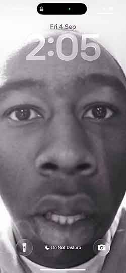
Every single day I'm greeted by this beautiful photo of my favourite artist, Tyler the Creator.
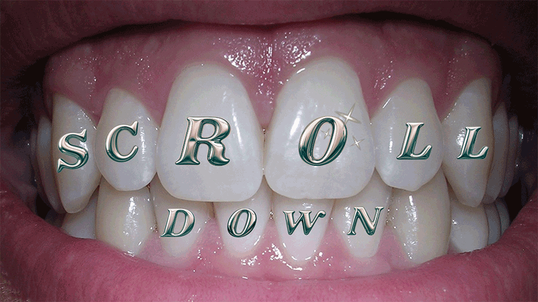

Every single day I'm greeted by this beautiful photo of my favourite artist, Tyler the Creator.
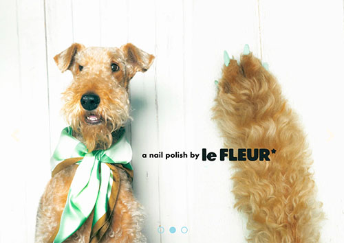
Seeing Tyler's gorgeous face inspired me to look up his brand,
Golf le Fleur. It's fun to look at all the aesthetic things
for sale, however no amount of puppy cuteness could make me
spend $25 on nail polish.
Sorry not sorry, Darryl the Airedale Terrier...
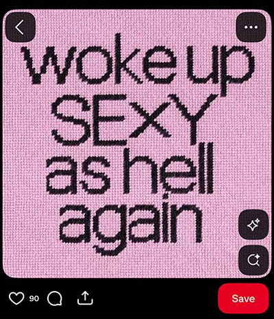
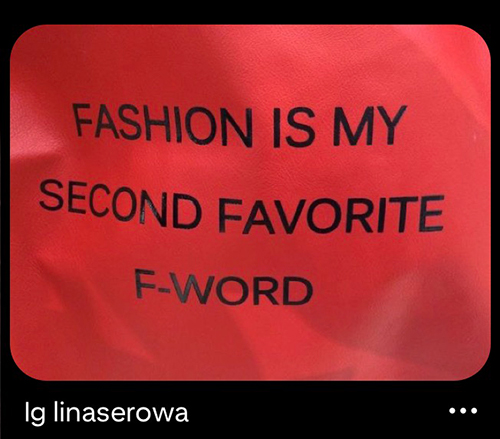
Opened Pinterest for some outfit inspo and was blessed with a quote to remind me of how to feel while getting dressed! #sexyashell
Of course I need some music blasting while I get ready! How else do I get a good start to my day?!?!
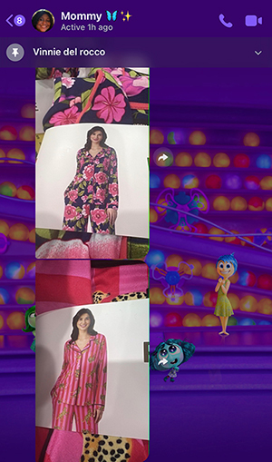
I can't go out the house without showing my number one fashion inspiration (my mommy) my outfit! She has a great sense of humor texting me the ugliest pajamas I've ever seen and asking if I want them!
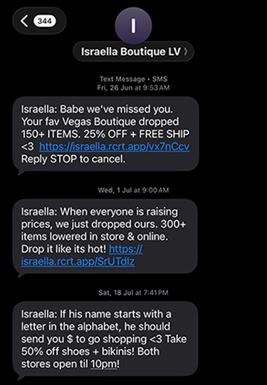
I always get the weirdest texts from this boutique in Vegas...but I love the texts, because I get in on the deals!
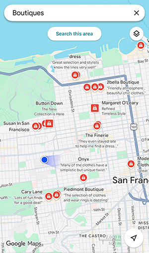
Since boutiques are on my mind I decide to see some in the area to possibly shop around!
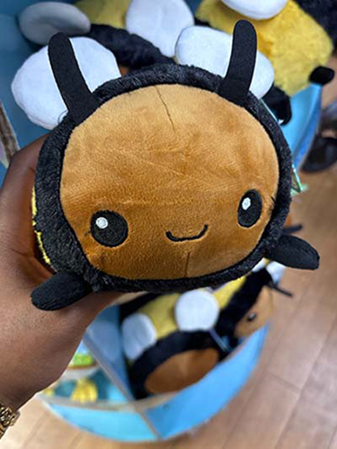
The boutique search led me to Japantown and I found the cutest bee bag charm!
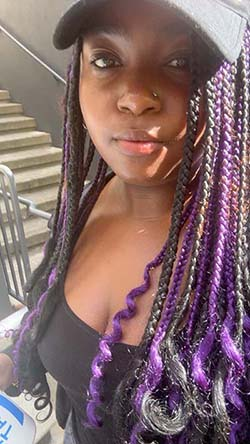
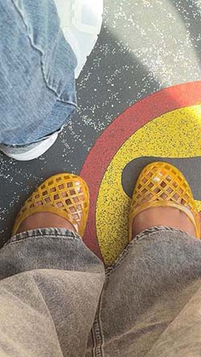
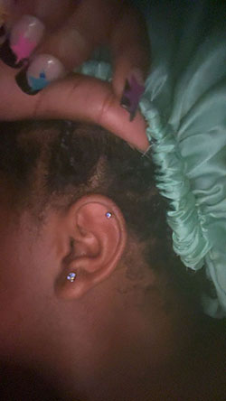
I'll often open my phone and look through photos I like of my outfit or hair to send to my family or post! I got a new piercing and sent it to the fam gc asap!
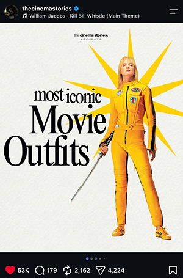
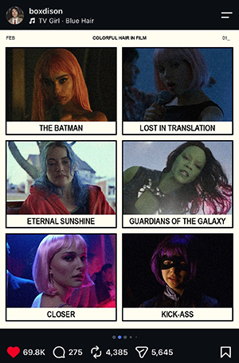
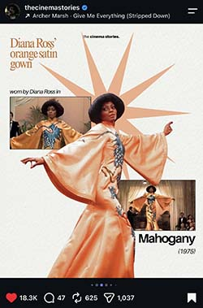
My instagram feed is filled with film refrences and sometimes they talk about fashion or hair choices for films
As a film major I have to dedicate some time to make moodboards or visualise my films stylistically before a shoot
I end the night scrolling through Tiktok to find people woth curly hair or black people with alternative style to get some inspiration that's often hard to find for people that look like me. After scrolling, I can dream about dying my hair!